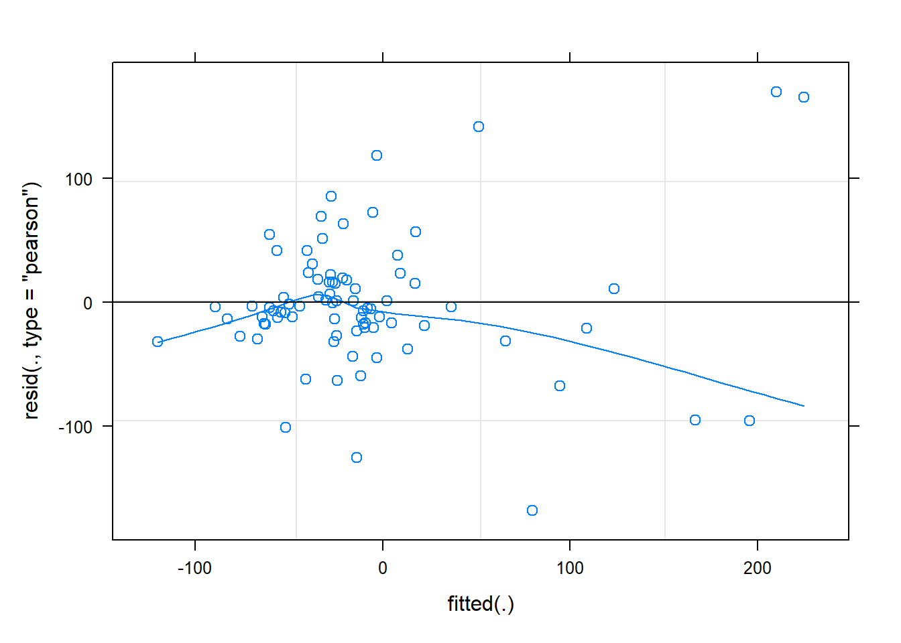
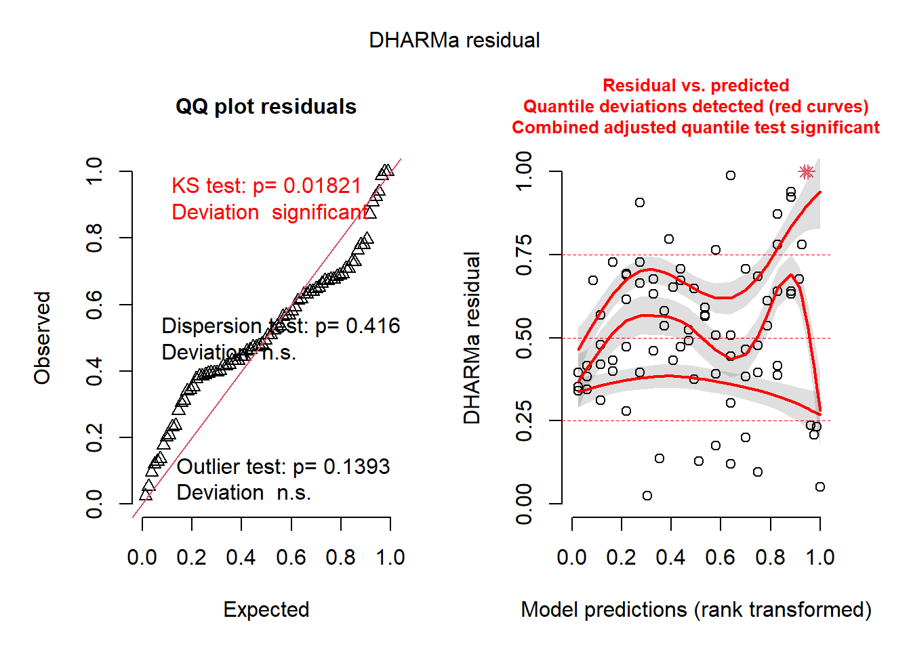
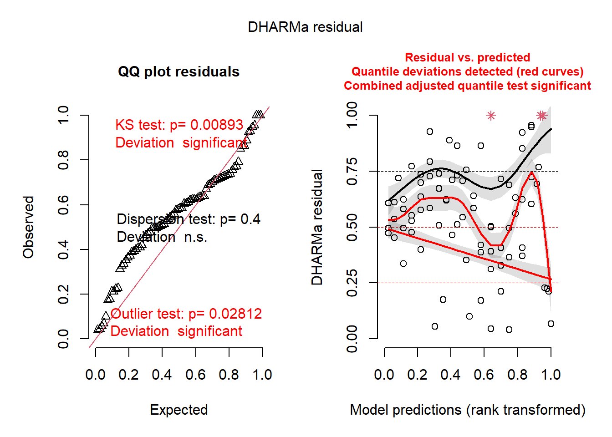
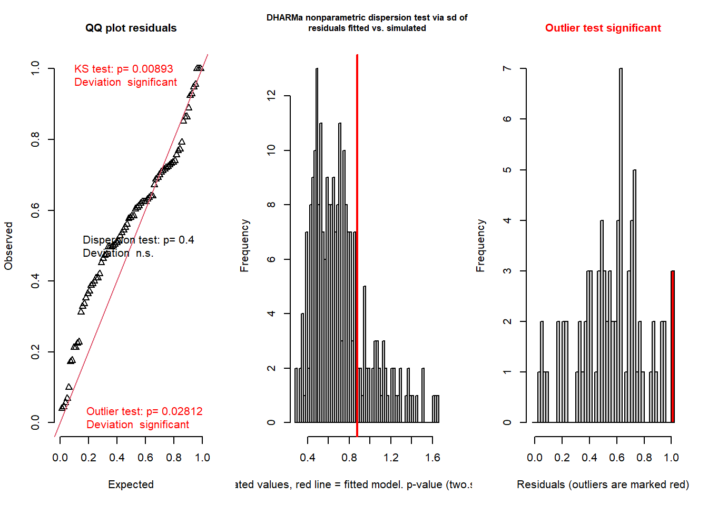

Generalized Linear Mixed Models (GLMM)
NRES 710
Fall 2022
Download the R code for this lecture!
To follow along with the R-based lessons and demos, right (or command) click on this link and save the script to your working directory
NOTE: Ben Bolker maintains a very useful “FAQ” site on GLMM: if you are using GLMMs I encourage you to read through it and run through the R examples: https://bbolker.github.io/mixedmodels-misc/glmmFAQ.html
Overview: Mixed-effects models
Remember the assumption of independent observations? Every single one
of the models we have considered so far makes that assumption. If that
assumption is violated, we are committing pseudoreplication. If
pseudoreplication is relatively minor we may be able to ignore it for
modeling (but still reporting the potential issue). But in many cases
the issue is too large to ignore.
Mixed models allow us to build more realistic models that incorporate
some known potential sources of non-independence in our data.
The term mixed-effects models refers to the fact that these models have two kinds of predictor variables: fixed effects and random effects. The random effects are what allow us to incorporate potential inter-dependencies among our observations.
Is it a fixed effect or a random effect?
One point of confusion that quickly bubbles up around mixed-effects models is the question of whether you should include a predictor variable as a random or a fixed effect.
It might help to consider some typical random effects and some typical fixed effects:
Fixed effects
Typical fixed effects include:
- Temperature (continuous fixed effect- e.g., linear regression)
- Treatment (categorical fixed effect- e.g., ANOVA)
- Interaction between temperature and treatment (interaction fixed effect)
Fixed effects are what we have been calling ‘predictor variables’ in this class. They usually represent the variables that we want to relate to our response variable. Ideally, our observations span the full range of our fixed effects (predictor variables) such that we can use our data to make inference about the relationship between our response and predictor variables across the range of values that we might encounter in our entire population of interest.
There is no assumption that our predictor variables are normally distributed- in fact, the only assumption we make about the predictor variables (usually) are that (1) they are measured with certainty and (2) we ideally want them to be distributed evenly across the range of values across which we want to make inference about our response process.
For example, if we want to make inference about the relationship between tree diameter and volume, we would like to take measurements of trees that vary from the smallest-diameter trees we wish to make inference about to the largest-diameter trees that we’d like to make inference about. To ensure that our sample includes the full range of diameters, we might specifically select trees that cover the entire range of interest. That is, we could fix the set of trees in our samples to include the full range of our predictor variable. There is no rule stating that we have to select our predictor variable levels from a random process. In fact, experimental design is all about pre-determining our predictor variable levels!
The term fixed effect comes from experimental design, where we literally arrange (fix) our observations into specific treatment and control groups. For example, we might take 100 otherwise interchangeable sapling trees and subject them randomly to different treatments of fixed levels of some factor that might influence growth (say nitrogen concentrations)- and then we can make inference about the effect of nitrogen across the range of concentrations that we determined.
SIDE NOTE: we can (and often do) make inferences about our response variable for levels of our predictor variables that are outside the range of values in our data set. This is called extrapolation and can be a dangerous practice because we lack empirical support for this type of inference, especially when the predictions are far outside the bounds of our data set.
Random effects
Typical Random effects include:
- Block ID (blocks are a small subset of the units about which you want to make inference, multiple observations per block)
- Site ID (sites are a small subset of the units about which you want to make inference, multiple observations per site)
- Year (study years are a small subset of the years about which you want to make inference, multiple observations per year)
- Individual (individuals studied are randomly selected from the population of interest, each individual subjected to repeated measurements)
First of all, random effects (in the context of standard GLMM [and this course] anyway) should be categorical- and should have multiple categories (usually >5 and ideally much larger).
Second, random effects should represent a random sample or otherwise a subset of the units about which you want to make inference.
Third, random effects variables should have multiple observations per level (category)- at least for most levels. If you only have one observation per level, it is not a random effect- it’s just a replicate observation!
Typically, we assume that random effects are normally distributed: i.e., described by a mean and a variance (or std dev).
Mixed effects models in regression notation
Before we run examples in R, let’s look at linear mixed-effects regression models in regression notation.
The equation should look familiar- the only difference is that there is more than one error term. Each random effect is now associated with a new error term…
Let’s say we are fitting the following mixed-effects model:
Response variable: Tortoise clutch size
Predictor variables: fixed effects: Annual winter
precipitation, Annual spring temperature
Predictor variables: random effects: Site, year
The simplest way to model random effects is to include them as random intercepts– that is, the intercept term changes randomly with each factor level.
In many cases, simply adding a random intercept term for each random effect is appropriate for accounting for sources of non-independence in your data set- but in many cases it is not sufficient. That is because the slope (the relationship between your response and predictor– the thing you are usually most interested in making inference about) can itself vary depending on your random effect levels. This is called a random slopes model. Here is an equation to represent the simpler random-intercept analysis:
\(Clutch \space size = \beta_0 + \beta_1 \cdot precip_t + \beta_2 \cdot temp_t + \gamma_{site} + \gamma_{year} + \epsilon_{obs}\)
Here we now have three sources of ‘error’: a random (normally distributed) term for each site (\(\gamma_{site}\)), a random (normally distributed) term for each year, and a normally distributed residual error term (\(\epsilon_{obs}\)).
If we want to include random slope and random intercept terms (which is often the most appropriate model), the equation gets a bit more complicated:
\(Clutch \space size = \beta_0 + \beta_1 \cdot precip_t + \beta_2 \cdot temp_t + \gamma_{site} + \gamma_{year} + \gamma_{site, \beta_1}\cdot precip_t + \gamma_{site, \beta_2}\cdot temp_t + \epsilon_{obs}\)
Here we have two additional “error” terms that allow the slope terms (beta1 and beta2) to vary randomly with each site and year.
Nested random effects
You will often read descriptions of mixed-effects models saying things like “Individual and site were included as random effects, with individual nested within Site”.
Let’s imagine we randomly selected 10 sites and within each site we capture a random sample of tortoises and we measure tortoise clutch size for 4 consecutive years for each tortoise.
In this case, we have two potential random effects: site (random subset of a much larger set of potential sites) and individual (random subset of a much larger set of individuals within each site). Individual #1 from Site #1 is obviously a different individual than Individual #1 from Site #2. So we can’t simply include a simple random effect term for “Individual #1”. Since there are many “Individual #1”s, each “Individual #1” must get its own random effect! In this case, Individual is nested within Site!
Let’s contrast this with a non-nested (crossed) random effect- let’s say site and year.
In this case, Year “2014” in site #1 is the same as Year “2014” in site #2. Therefore the random effect associated with year “2014” does not differ depending on site. In this case, site and year are independent, non-nested random effects!
Assumptions of mixed-effects regression
The assumptions of mixed-effects regression are the same as in classical linear regression (for mixed-effects regression models) or generalized linear models (for generalized linear mixed models; GLMM). The only additional assumption is this:
- All random effects are normally distributed!
In some more complex models you might encounter models that assume random effects take other distributions- but this is still VERY rare to see!
Example: mixed-effects regression in R
The ‘workhorse’ package in R for fitting generalized linear mixed-effects regression models (GLMM) is the ‘lme4’ package. However, there are some other packages you should be aware of that can make your life easier. One such package is “glmmTMB”- I have found this package has more flexibility and tends to have less trouble fitting complex mixed-effects models.
We will use this dataset as our example - this is a data set on carbon balance in the tundra. This example is taken from this website.
# TUNDRA EXAMPLE ---------------------------
## Read in the data
mc1 <- read.csv("tundra2.csv",sep=",",na.strings=c("-","NA"))
summary(mc1)## X Year Site GS.NEE
## Min. : 1.00 Min. :1966 Length:82 Min. :-153.000
## 1st Qu.:21.25 1st Qu.:1993 Class :character 1st Qu.: -55.350
## Median :41.50 Median :1998 Mode :character Median : -20.867
## Mean :41.50 Mean :1998 Mean : -10.012
## 3rd Qu.:61.75 3rd Qu.:2005 3rd Qu.: 3.275
## Max. :82.00 Max. :2010 Max. : 390.000
## n cYear
## Min. :1.000 Min. :-31.8698
## 1st Qu.:1.000 1st Qu.: -4.8698
## Median :1.000 Median : 0.6302
## Mean :1.829 Mean : -0.1015
## 3rd Qu.:2.750 3rd Qu.: 7.1302
## Max. :6.000 Max. : 12.1302table(mc1$Year) # some years have many observations##
## 1966 1970 1971 1972 1983 1984 1985 1987 1990 1991 1992
## 1 1 1 1 1 1 1 1 4 5 2
## 1993 1994 1995 1996 1997 1998 1999 2000 2001 2002 2002.5
## 4 4 6 4 3 1 2 2 3 2 1
## 2003 2003.5 2004 2004.5 2005 2006 2007 2008 2008.5 2009 2010
## 2 1 3 1 4 5 4 4 1 3 3table(mc1$Site) # some sites have many observations##
## Anajtyvuk River, AK APL-133, AK Atqasuk, AK
## 1 3 1
## Barrow Peninsula Barrow, AK Daring Lake, CA
## 1 12 7
## Halmer-Yu, RU Happy Valley, AK Healy, AK
## 1 5 7
## Imnavait Creek, AK Ivotuk, AK Kytalyk Reserve, RU
## 4 2 1
## Lek Vorkuta, RU Meade River, AK Pituffik Peninsula, GL
## 2 1 2
## Prudhoe Bay, AK Sagwon, AK Samoylov Island, RU
## 7 1 1
## Talnik, RU Toolik & Happy Valley, AK Toolik, AK
## 1 1 12
## U-PAD, AK West Dock & U-PAD, AK Zachenberg, GL
## 2 1 6library(ggplot2)
## visualize net ecosystem exchange by year- varying by site
ggplot(mc1,aes(x=Year,y=GS.NEE,colour=Site)) +
geom_point() +
geom_smooth(method="lm",alpha=0.3) +
scale_y_continuous(limits=c(-150,400),oob=scales::squish)
Okay now let’s fit a mixed-effects regression model with Net Ecosystem Exchange (NEE) as the response variable and Year as the fixed-effect (covariate). For our random effect we will have site- and the intercept and trend (slope term) can vary with site. That is, we have random intercept terms and random slope terms for each site.
Fitting a mixed model in ‘lme4’ (using the lmer()
function or glmer() function) looks a lot like fitting a
linear model in ‘lm’.
library(lme4)
cmod_lmer <- lmer(GS.NEE ~ cYear + (1+cYear|Site),
data=mc1, weights=n)A couple notes: first of all, the ‘weights’ term is there because some observations are aggregated- that is, there are multiple observations for a given site/year combination- those observations that aggregate 3 observations get triple the weight of a site/year combination with only one observation.
Secondly, note that year is treated as a fixed effect in this model. That is- we are looking for a trend in our response variable over time!
Third, don’t be surprised if you get a ‘singular fit’ warning. This is fairly common to see, and doesn’t necessarily mean you can’t use the model. But it means that lme4 struggled to fit the model and often some of the parameters may have very wide confidence bounds!
Let’s look at the model results using ‘summary’:
summary(cmod_lmer)## Linear mixed model fit by REML ['lmerMod']
## Formula: GS.NEE ~ cYear + (1 + cYear | Site)
## Data: mc1
## Weights: n
##
## REML criterion at convergence: 874.2
##
## Scaled residuals:
## Min 1Q Median 3Q Max
## -2.90221 -0.35038 -0.07972 0.30155 2.93141
##
## Random effects:
## Groups Name Variance Std.Dev. Corr
## Site (Intercept) 116.05 10.773
## cYear 19.95 4.467 -1.00
## Residual 3355.16 57.924
## Number of obs: 82, groups: Site, 24
##
## Fixed effects:
## Estimate Std. Error t value
## (Intercept) -16.296 7.338 -2.221
## cYear -3.745 1.341 -2.792
##
## Correlation of Fixed Effects:
## (Intr)
## cYear -0.417
## optimizer (nloptwrap) convergence code: 0 (OK)
## boundary (singular) fit: see help('isSingular')The results from the summary() function should look
somewhat familiar! But note that there are no p-values associated with
your fixed effects (regression coefficients)- just t-statistics! This is
because it is difficult to compute the degrees of freedom- statisticians
disagree about how and if p-values can/should be computed for these
models.
Also note that the summary now includes a summary of the random effects. One red flag here is that the random intercept term and random slope terms are perfectly (negatively) correlated (Corr=-1). This is the reason for the ‘singular’ warning in this case.
From the random effects summary we can see that site explains a relatively small percent of the total variance among observations.
To fit the model using glmmTMB we can use the following code:
library(glmmTMB)
cmod_glmmTMB <- glmmTMB(GS.NEE ~ cYear + (1+cYear|Site),
data=mc1,
weights=n,REML=F)
summary(cmod_glmmTMB) # note NAs present## Family: gaussian ( identity )
## Formula: GS.NEE ~ cYear + (1 + cYear | Site)
## Data: mc1
## Weights: n
##
## AIC BIC logLik deviance df.resid
## NA NA NA NA 76
##
## Random effects:
##
## Conditional model:
## Groups Name Variance Std.Dev. Corr
## Site (Intercept) 3.841e-02 0.196
## cYear 3.148e+01 5.611 -0.79
## Residual 1.543e+03 39.280
## Number of obs: 82, groups: Site, 24
##
## Dispersion estimate for gaussian family (sigma^2): 1.54e+03
##
## Conditional model:
## Estimate Std. Error z value Pr(>|z|)
## (Intercept) -22.347 5.579 -4.005 6.19e-05 ***
## cYear -3.706 1.416 -2.617 0.00887 **
## ---
## Signif. codes: 0 '***' 0.001 '**' 0.01 '*' 0.05 '.' 0.1 ' ' 1# try a different optimizer -still doesn't work...
cmod_glmmTMB2 <- update(cmod_glmmTMB,control=glmmTMBControl(optimizer=optim,
optArgs=list(method="BFGS")))
summary(cmod_glmmTMB2)## Family: gaussian ( identity )
## Formula: GS.NEE ~ cYear + (1 + cYear | Site)
## Data: mc1
## Weights: n
##
## AIC BIC logLik deviance df.resid
## NA NA NA NA 76
##
## Random effects:
##
## Conditional model:
## Groups Name Variance Std.Dev. Corr
## Site (Intercept) 6.801e-48 2.608e-24
## cYear 3.162e+01 5.624e+00 1.00
## Residual 1.542e+03 3.927e+01
## Number of obs: 82, groups: Site, 24
##
## Dispersion estimate for gaussian family (sigma^2): 1.54e+03
##
## Conditional model:
## Estimate Std. Error z value Pr(>|z|)
## (Intercept) -22.411 5.127 -4.371 1.24e-05 ***
## cYear -3.710 1.411 -2.629 0.00856 **
## ---
## Signif. codes: 0 '***' 0.001 '**' 0.01 '*' 0.05 '.' 0.1 ' ' 1# try a different specification- uncorrelated slope and intercept terms:
cmod_glmmTMB3 <- glmmTMB(GS.NEE ~ cYear + (1|Site) + (0+cYear|Site),
data=mc1,
weights=n, REML=T)
summary(cmod_glmmTMB3) # fits- not saying it's a good model!## Family: gaussian ( identity )
## Formula: GS.NEE ~ cYear + (1 | Site) + (0 + cYear | Site)
## Data: mc1
## Weights: n
##
## AIC BIC logLik deviance df.resid
## 1564.5 1576.5 -777.2 1554.5 79
##
## Random effects:
##
## Conditional model:
## Groups Name Variance Std.Dev.
## Site (Intercept) 519.41 22.791
## Site.1 cYear 34.56 5.879
## Residual 1409.15 37.539
## Number of obs: 82, groups: Site, 24
##
## Dispersion estimate for gaussian family (sigma^2): 1.41e+03
##
## Conditional model:
## Estimate Std. Error z value Pr(>|z|)
## (Intercept) -21.490 8.465 -2.539 0.01112 *
## cYear -4.772 1.693 -2.818 0.00483 **
## ---
## Signif. codes: 0 '***' 0.001 '**' 0.01 '*' 0.05 '.' 0.1 ' ' 1The summary looks (vaguely) similar- but one difference you see is that there are p-values on the regression coefficients now. This is due to assumptions that are made in glmmTMB model fitting process (using the Laplace approximation), which allows p-values to be computed!
Let’s perform some model diagnostics to test goodness-of-fit!
Since the standard linear regression assumptions apply, we could look at our standard diagnostic plots:
plot(cmod_lmer,type=c("p","smooth"))
plot(cmod_lmer,sqrt(abs(resid(.)))~fitted(.),
type=c("p","smooth"),ylab=expression(sqrt(abs(resid))))
plot(cmod_lmer,resid(.,type="pearson")~cYear,
type=c("p","smooth"))
qqnorm(residuals(cmod_lmer,type="pearson",scaled=T))
The diagnostics look, well, okay! Let’s try “DHARMa”:
library(DHARMa)
resids <- simulateResiduals(cmod_lmer) # similar results for the two different models
plot(resids)
resids <- simulateResiduals(cmod_glmmTMB3)
plot(resids)
testResiduals(resids)
## $uniformity
##
## Asymptotic one-sample Kolmogorov-Smirnov test
##
## data: simulationOutput$scaledResiduals
## D = 0.18166, p-value = 0.008926
## alternative hypothesis: two-sided
##
##
## $dispersion
##
## DHARMa nonparametric dispersion test via sd of residuals fitted vs.
## simulated
##
## data: simulationOutput
## dispersion = 1.221, p-value = 0.4
## alternative hypothesis: two.sided
##
##
## $outliers
##
## DHARMa outlier test based on exact binomial test with approximate
## expectations
##
## data: simulationOutput
## outliers at both margin(s) = 3, observations = 82, p-value = 0.02812
## alternative hypothesis: true probability of success is not equal to 0.007968127
## 95 percent confidence interval:
## 0.007609277 0.103215022
## sample estimates:
## frequency of outliers (expected: 0.00796812749003984 )
## 0.03658537## $uniformity
##
## Asymptotic one-sample Kolmogorov-Smirnov test
##
## data: simulationOutput$scaledResiduals
## D = 0.18166, p-value = 0.008926
## alternative hypothesis: two-sided
##
##
## $dispersion
##
## DHARMa nonparametric dispersion test via sd of residuals fitted vs.
## simulated
##
## data: simulationOutput
## dispersion = 1.221, p-value = 0.4
## alternative hypothesis: two.sided
##
##
## $outliers
##
## DHARMa outlier test based on exact binomial test with approximate
## expectations
##
## data: simulationOutput
## outliers at both margin(s) = 3, observations = 82, p-value = 0.02812
## alternative hypothesis: true probability of success is not equal to 0.007968127
## 95 percent confidence interval:
## 0.007609277 0.103215022
## sample estimates:
## frequency of outliers (expected: 0.00796812749003984 )
## 0.03658537Not perfect… and this is from a published study in Ecology Letters. So you can probably forgive yourself if your GOF tests are not perfect in your class projects!
Okay let’s visualize the random effects (both intercept and random slope terms):
library(lattice)
dotplot(ranef(cmod_lmer,condVar=TRUE),
lattice.options=list(layout=c(1,2)))## $Site
If we want to test to see if year is explaining any of the variance, we can run an F-test (ANOVA):
library(car)
Anova(cmod_lmer)## Analysis of Deviance Table (Type II Wald chisquare tests)
##
## Response: GS.NEE
## Chisq Df Pr(>Chisq)
## cYear 7.7956 1 0.005237 **
## ---
## Signif. codes: 0 '***' 0.001 '**' 0.01 '*' 0.05 '.' 0.1 ' ' 1Or we can compare using AIC. When using AIC it’s generally recommended not to use REML for model fitting.
cmod_lmer2 <- lmer(GS.NEE ~ cYear + (1+cYear|Site),
data=mc1, weights=n,REML=F)
cmod_lmer3 <- lmer(GS.NEE ~ 1 + (1+cYear|Site),
data=mc1, weights=n,REML=F)
AIC(cmod_lmer2,cmod_lmer3)## df AIC
## cmod_lmer2 6 894.1666
## cmod_lmer3 5 899.2038We can also use similar tests to see if a random effect is worth including:
cmod_lmer3 <- lmer(GS.NEE ~ cYear + (1+cYear|Site),
data=mc1, weights=n,REML=F)
cmod_lmer4 <- lmer(GS.NEE ~ cYear + (1|Site),
data=mc1, weights=n,REML=F)
anova(cmod_lmer4,cmod_lmer3)## Data: mc1
## Models:
## cmod_lmer4: GS.NEE ~ cYear + (1 | Site)
## cmod_lmer3: GS.NEE ~ cYear + (1 + cYear | Site)
## npar AIC BIC logLik deviance Chisq Df Pr(>Chisq)
## cmod_lmer4 4 919.60 929.23 -455.80 911.60
## cmod_lmer3 6 894.17 908.61 -441.08 882.17 29.435 2 4.058e-07 ***
## ---
## Signif. codes: 0 '***' 0.001 '**' 0.01 '*' 0.05 '.' 0.1 ' ' 1AIC(cmod_lmer3,cmod_lmer4) # random slope term effect is not an artifact of random chance!## df AIC
## cmod_lmer3 6 894.1666
## cmod_lmer4 4 919.6015We can also compute R-squared-like statistics to evaluate performance for GLMMs:
# Compute r-squared for GLMM! -----------------
MuMIn::r.squaredGLMM(cmod_lmer)## R2m R2c
## [1,] 0.1923366 0.4820433MuMIn::r.squaredGLMM(cmod_glmmTMB)## R2m R2c
## [1,] 0.2207863 0.7207649Note that if we had a categorical variable and wanted to run pairwise
comparisons, we could- using the emmeans() function (just
like with standard ANOVA).
If we want confidence intervals on our fixed effects, we can use the ‘confint’ function, just like in ordinary linear regression. Here we use the Wald method (simplified version) and only extract confidence intervals for the fixed effects.
confint(cmod_lmer,parm="beta_",method="Wald")## 2.5 % 97.5 %
## (Intercept) -30.677776 -1.914152
## cYear -6.374309 -1.116174Other things we might want to do with GLMM models (no examples provided yet!): effects plots for main effect- and random intercepts/slopes!
Nonconvergence
A common problem when fitting GLMMs is nonconvergence.
Some helpful tips can be found here.
Scaling and zero-centering all of your covariates can help!
Also, it can help to try using glmmTMB or other model fitting packages in addition to ‘lme4’.